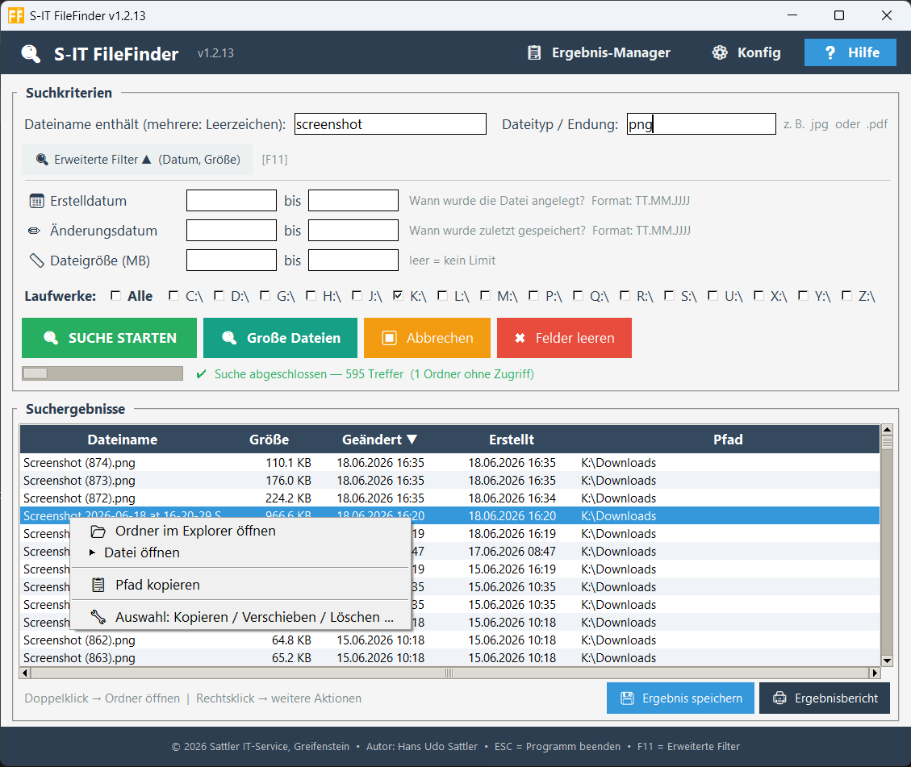
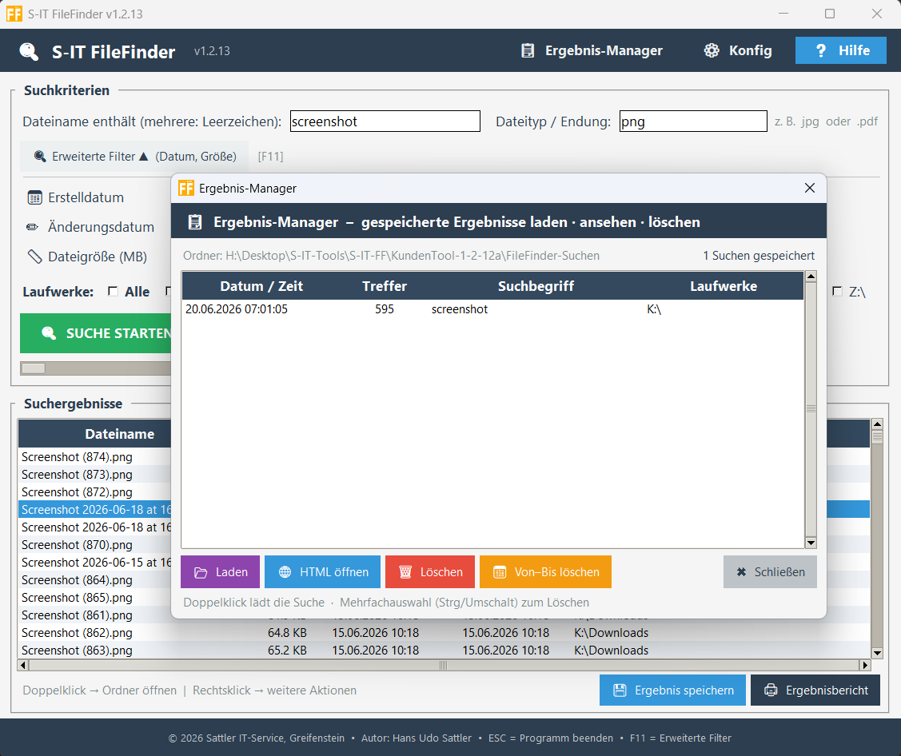
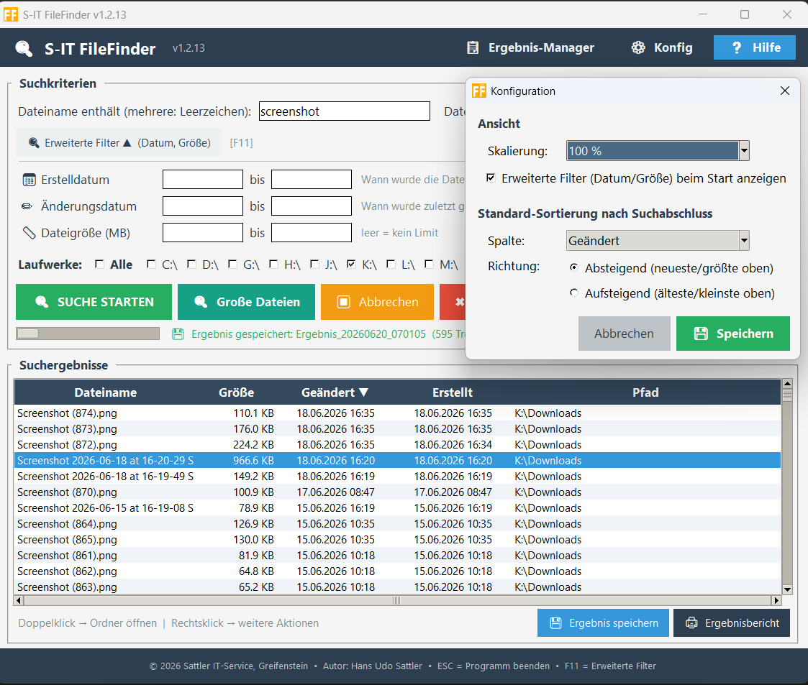
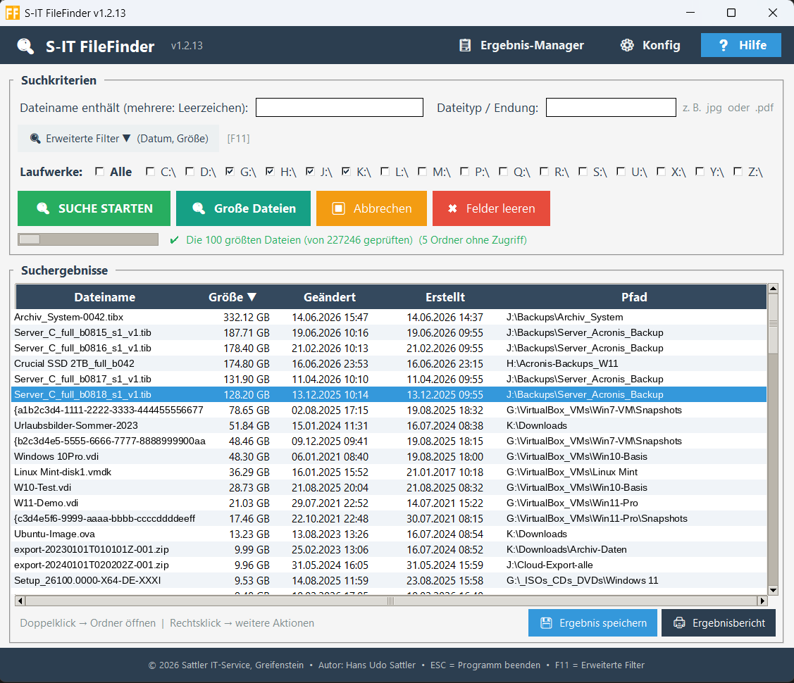
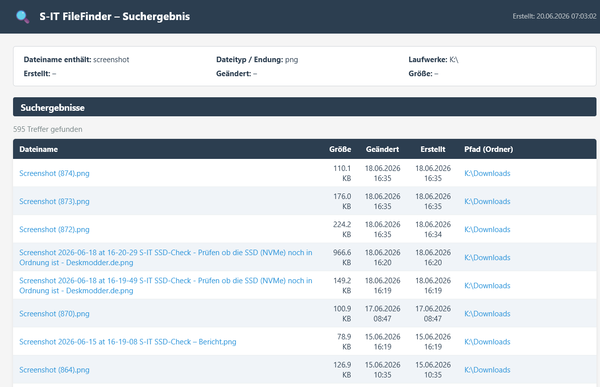

Das Hauptfenster: suchen, sortieren und per Rechtsklick direkt weiterarbeiten
Leistungsmerkmale
Windows-Bordmittel und Tools wie Everything sind für erfahrene Nutzer gemacht. S-IT FileFinder richtet sich an alle, die einfach nur eine Datei wiederfinden wollen – ohne Syntaxkenntnisse, ohne Handbuch.
Namensbruchstücke
Suche nach einem oder mehreren Teilen des Dateinamens – durch Leerzeichen getrennt, Groß-/Kleinschreibung egal.
Dateityp / Endung
Gezielt nach Dateitypen suchen – z. B. jpg, .pdf oder docx, mit oder ohne Punkt.
Alle Laufwerke
Lokale Laufwerke und eingebundene Netzlaufwerke per Checkbox auswählen – einzeln oder alle auf einmal.
Datum & Größe
Erstell- und Änderungsdatum sowie Dateigröße als erweiterte Filter – per F11 jederzeit ein- oder ausklappbar.
Sortieren per Klick NEU
Ein Klick auf die Spaltenüberschrift sortiert die Treffer nach Name, Größe, Datum oder Pfad – Größe und Datum korrekt nach echtem Wert, nicht nach Text.
Große Dateien finden NEU
Auf Knopfdruck die 100 größten Dateien der gewählten Laufwerke anzeigen – ideal, um Speicherfresser aufzuspüren.
Kopieren, Verschieben, Papierkorb NEU
Mehrere Treffer markieren und direkt im Tool kopieren, verschieben oder in den Papierkorb legen – mit Fortschrittsanzeige und ohne versehentliches Überschreiben.
Speichern & Ergebnis-Manager NEU
Suchergebnisse speichern und später wieder laden oder als HTML-Bericht ansehen – verwaltet im übersichtlichen Ergebnis-Manager.
Anzeige & Konfiguration
Volle DPI-/4K-Unterstützung, Darstellungsgröße 100–200 % und Standard-Sortierung – zentral im Konfig-Dialog einstellbar.
Screenshots

Ergebnis-Manager – gespeicherte Ergebnisse laden, ansehen, löschen

Konfiguration – Skalierung, Filter beim Start, Standard-Sortierung

Große Dateien – die größten Speicherfresser auf einen Blick

Ergebnisbericht als HTML – Dateinamen und Pfade direkt anklickbar
Download & Dokumentation
⬇ Direktdownload – s-it-filefinder_latest.zip
Alle Versionen und den vollständigen Changelog findest du im Release-Bereich auf GitHub.
Die Bedienungsanleitung lässt sich auch online ansehen.
Systemanforderungen
| Komponente | Anforderung |
|---|---|
| Betriebssystem | Windows 10 / Windows 11 (64-Bit) |
| Bildschirm | Ab 1024 × 768 – optimiert für FHD und UHD/4K |
| Rechte | Keine Administratorrechte erforderlich |
| Installation | Nicht erforderlich – portabel, direkt aus dem Ordner startbar |
| Lieferumfang | Ordner S-IT-FileFinder\ mit EXE, Laufzeitdateien + S-IT-FileFinder-Hilfe.html |
Sicherheits- und Installationshinweis
Hinweis zu Virenscannern & SmartScreen
Da es sich um ein unabhängig entwickeltes Windows-Tool handelt, kann es vorkommen, dass Windows SmartScreen oder installierte Internet-Security-Programme die Datei zunächst als unbekannt einstufen.
In diesem Fall fügen Sie das Programm bitte als vertrauenswürdig bzw. als Ausnahme in Ihrer Sicherheitssoftware hinzu.
Changelog
Version 1.2.12 – Sortierung, Große Dateien, Dateiaktionen & Ergebnis-Manager Aktuell
- Sortierung: Treffer per Klick auf die Spaltenüberschrift sortieren – Größe und Datum korrekt nach echtem Wert statt nach Text
- Große Dateien: die 100 größten Dateien der gewählten Laufwerke auf Knopfdruck anzeigen – zum schnellen Aufspüren von Speicherfressern
- Dateiaktionen: mehrere Treffer markieren und im eigenen Fenster kopieren, verschieben oder in den Papierkorb legen – mit Byte-genauem Fortschrittsbalken und ohne Überschreiben (automatische Umbenennung)
- Ergebnisse speichern: Suchergebnisse speichern, später wieder laden oder als HTML-Bericht ansehen – verwaltet im neuen Ergebnis-Manager
- Konfiguration: zentraler Dialog für Darstellungsgröße, erweiterte Filter beim Start und Standard-Sortierung (gespeichert in FileFinder-config.ini)
- Aktualisierte Hilfe-Datei und zahlreiche Detailverbesserungen
Version 1.2.4 – Stabiler Neustart
- Neustart-Fix: DPI-Umschaltung startet die neue Instanz jetzt zuverlässig ohne „Failed to import encodings"-Fehler – kompilierte EXE wird direkt gestartet, kein Temp-Pfad mehr
- --onedir: Umstellung auf Ordner-basierte EXE – kein Entpacken in Temp beim Start, kein „Failed to remove temporary directory"
- Neustart-Verzögerung (200 ms) verhindert Race Condition beim Schließen
Version 1.2.3 – Layout Erweiterte Filter
- Bezeichnungen: „Erstellt von / Geändert von" ersetzt durch Erstelldatum und Änderungsdatum – für Endanwender verständlicher
- Symbole: Alle drei Filterzeilen einheitlich mit Symbol (📅 📏 ✏️), bündig untereinander
- Layout: Von/bis-Felder dichter beieinander, Labels linksbündig, kein Flattersatz mehr
- Größenzeile mit Symbol 📏 und Label „Dateigröße (MB)"
Version 1.2.1 – Größenangaben in MB
- Größenfilter arbeitet jetzt in Megabyte statt Kilobyte – praxisgerechter für typische Dateigrößen
- Maximalgröße erkennt automatisch MB oder GB (z. B. „2,50 GB") im HTML-Ergebnislog
Version 1.2.0 – Ansicht & Erweiterte Filter
- F11-Toggle: Datum- und Größenfelder lassen sich per Taste F11 oder Schaltfläche ein- und ausklappen – das Fenster passt seine Höhe automatisch an
- Ansicht-Schaltfläche: Darstellungsgröße wählbar (100 % – 200 %) direkt in der Kopfleiste, mit optionalem Programm-Neustart
- DPI / 4K: Vollständige Skalierung für hochauflösende Bildschirme – Schriften, Abstände, Spaltenbreiten passen sich automatisch an
- Automatische Fensterbreite: Bei vielen Laufwerksbuchstaben verbreitert sich das Fenster automatisch
- Verbesserte Datumsbeschriftungen: Erklärungstext direkt an den Feldern (wann angelegt / wann zuletzt gespeichert)
- Header neu gestaltet: Version links, Schaltflächen rechts mit großzügigem Abstand
- Startgröße und -position werden automatisch an die Bildschirmfläche angepasst
Version 1.0.1 – Bugfix Startverhalten
- Einfrieren beim Programmstart auf Systemen mit DVD-Laufwerk oder Kartenleser ohne eingelegtes Medium behoben – Laufwerke werden jetzt über die Windows-API ermittelt, kein Timeout mehr beim Start
Version 1.0.0 – Erstveröffentlichung
- Suche nach Namensbruchstücken, Dateityp, Erstell-/Änderungsdatum und Dateigröße
- Multi-Laufwerk-Unterstützung mit Alle-Checkbox
- HTML-Ergebnislog mit klickbaren Pfaden
- Kontextmenü: Ordner öffnen, Datei öffnen, Pfad kopieren, Kopieren/Verschieben
- Hilfe-Button mit HTML-Dokumentation
Kontakt / Spende
Hat Ihnen dieses Tool geholfen?
S-IT FileFinder wird kostenlos entwickelt und gepflegt.
Eine kleine Spende hilft dabei, die Tools weiterzuentwickeln. Herzlichen Dank! 🙏